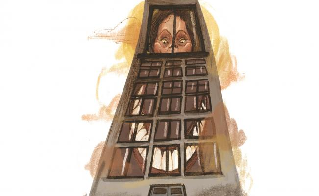
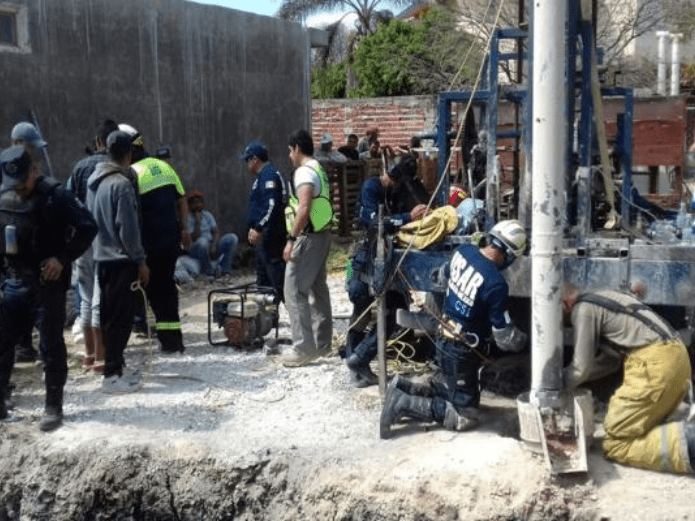

Página de Sergio Gabriel Sánchez Valencia
Página de Sergio Gabriel Sánchez ValenciaPrimaria:
North Williams
Juana de Asbaje
Secundaria: Instituto Juventud Del Estado de México
Vocacional: CECyT #9 "Juan de Dios Batiz Paredes"
Superior: Escuela Superior de Cómputo
Fecha de ingreso: Agosto 2016
Promedio: 9.55
Semestre actual: Cuarto
Horario actual
| Grupo | Salón | Materia | Profesor | Lunes | Martes | Miércoles | Jueves | Viernes |
|---|---|---|---|---|---|---|---|---|
| 2CM8 | 1012 | Probabilidad y estadística | Cañedo Suarez Leticia | 12:00 - 1:30 | 12:00 - 1:30 | 12:00 - 1:30 | ||
| 3CM1 | 1110 | Administración de Proyectos | Rodriguez Flores Eduardo | 7:00 - 8:30 | 7:00 - 8:30 | 8:30 - 10:00 | ||
| 2CM7 | 1212 | Análisis y diseño orientado a objetos | Carreto Arellano Chadwick | 07:00 - 08:30 | 07:00 - 08:30 | 07:00 - 08:30 | ||
| 2CM8 | 1011 | Diseño de sistemas digitales | Lopez Rodriguez Claudia Alejandra | 10:30 - 12:00 | 8:30 - 10:00 | 10:30 - 12:00 | ||
| 2CM10 | 1011 | Tecnologías para la web | Rivera de la Rosa Mónica | 08:30 - 10:00 | 08:30 - 10:00 | 08:30 - 10:00 |
| Noticia Web 1 | |
|---|---|
|
GUADALAJARA, Jalisco (El Universal).- Cuatro policías de Tecalitlán fueron arrestados por elementos de la Fiscalía de Jalisco, presuntamente por estar involucrados en la desaparición forzada de tres ciudadanos italianos, ocurrida el pasado 31 de enero. |
|
| Noticia Web 2 | |
|---|---|
|
Este material cuenta con derechos de propiedad intelectual. De no existir previa autorización por escrito de EL UNIVERSAL, Compañía Periodística Nacional S. A. de C. V., queda expresamente prohibida la publicación, retransmisión, distribución, venta, edición y cualquier otro uso de los contenidos (Incluyendo, pero no limitado a, contenido, texto, fotografías, audios, videos y logotipos). Si desea hacer uso de este contenido por favor comuníquese a la Agencia de Noticias de El Universal, al 57091313 extensión 2425. Muchas gracias. |  |
| Noticia Web 3 | |
|---|---|
|
PÉNJAMO, Gto. Este domingo alrededor de las 12:00 horas un niño de casi dos años cayó a un pozo seco de ocho metros de profundidad, en donde se encuentra cubierto de escombros de los pies a la cintura, en la comunidad Buenos Aires de Pénjamo, Guanajuato. |
 |
Diseñado por Sergio Gabriel Sànchez Valencia
Fecha: 26/02/18
Av. Juan de Dios Bátiz s/n esq. Av. Miguel Othón de Mendizabal.
Colonia Lindavista. Demarcación Territorial: Gustavo A. Madero. C. P. 07738